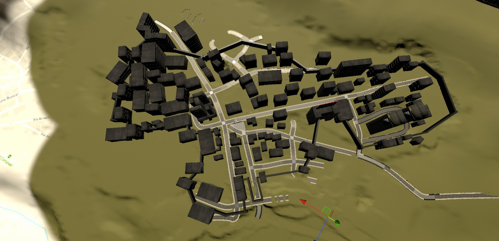
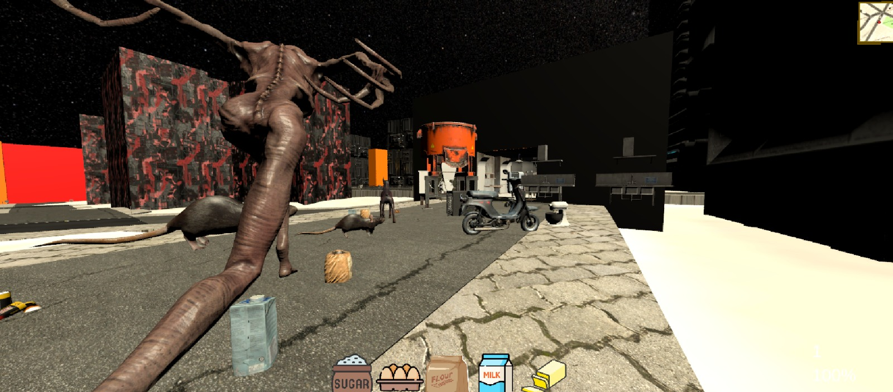

MCD Patch Notes
Note delle patch MCD
New features and additions:
Nuove funzionalità e aggiunte:
Version 3.9 (Pre-Alpha)
Versione 3.9 (Pre-Alpha)
- Random item spawn positions: Each match features a randomised placement of interactable objects.
- Spawn oggetti in posizioni randomiche: Ogni partita presenta una disposizione casuale degli oggetti interagibili.
- Performance improvements: Optimisation of models and scripts.
- Miglioramenti delle prestazioni: Ottimizzazione dei modelli e degli script.
- Added Death Screen: A death screen is shown in Singleplayer if the inventory contains no Medikit after being knocked down.
- Aggiunto Death Screen: Aggiunta schermata di morte nel Singleplayer se l'inventario non contiene un Medikit dopo esser stati atterrati.
- Object scanner icons: Added icons for items visible on the map when using the scanner.
- Icone oggetti scanner: Aggiunte le icone per gli oggetti nella mappa visibili con lo scanner.
- Scanner VFX: Added a visual effect for the scanner and adjusted the various script values.
- Scanner VFX: Aggiunto effetto visivo scanner e sistemati i vari valori dello script.
- Reduced player speed: The gameplay felt too fast, so I temporarily decided to lower the movement speed.
- Ridotta la velocità del player: Il gameplay sembrava troppo veloce, ho deciso temporaneamente di ridurre le velocità.
- Improved footstep system: Along with the movement value changes, we also improved the sound effects for footsteps.
- Miglioramento sistema passi: Con il cambiamento dei valori di movimento abbiamo anche migliorato quelli riguardanti i sound effects dei passi.
- Slightly improved the user interface.
- Migliorata leggermente l'interfaccia utente.
- New item: Medikit: Used to revive yourself.
- Nuovo oggetto: Medikit: Serve a rianimarsi.
- Various optimisations and fixes to the map.
- Diverse ottimizzazioni e correzioni alla mappa.
- Added a new tree model.
- Aggiunto un nuovo modello di albero.
- Implemented the knock and revival system.
- Implementato il sistema di knock e rianimazione.
- Introduced the starting item: Medikit.
- Introdotto l'oggetto di partenza: Medikit.
- Added a new structure: Cappelletti (work in progress)
- Aggiunta una nuova struttura: Cappelletti (da migliorare)
- Implemented the pause menu.
- Implementato il menu di pausa.
- Removed unused models.
- Rimossi i modelli non utilizzati.
- Added a debug system to respawn objects that fall through the map.
- Aggiunto sistema di debug per far respawnare gli oggetti caduti sotto la mappa.
- Added an experimental POI trigger at Palazzo Europa.
- Aggiunto POI trigger sperimentale al Palazzo Europa.
- Improved the game terrain.
- Migliorato il terreno di gioco.
- Optimised distance calculations between player and objects for correct functionality.
- Ottimizzati i calcoli della distanza tra giocatore e oggetti per il funzionamento corretto.
- Distributed items to craft 10 pasta doughs, along with some Medikits and batteries around the map.
- Distribuiti oggetti per creare 10 paste, alcuni Medikit e batterie in giro per la mappa.
- Added Enemy AI (State Machine): The monster is now active.
- Aggiunto Enemy AI (macchina a stati): Ora il mostro è attivo.
- New mechanic: UV flashlight: Used to drive the monster away.
- Nuova meccanica: torcia UV: Serve a scacciare il mostro.

Version 3.8 (Pre-Alpha)
Versione 3.8 (Pre-Alpha)
- Electrical panel with random combination: Each match features an electrical panel with a random combination to solve in order to power the oven.
- Quadro elettrico con combinazione casuale: Ogni partita presenta un quadro elettrico con una combinazione casuale da risolvere per attivare la corrente del forno.
- Performance improvements: Optimisation of texture loading.
- Miglioramenti delle prestazioni: Ottimizzazione del caricamento delle texture.
- Oven added: The oven has been introduced into the game, letting you bake the dough once all ingredients have been collected and prepared.
- Forno aggiunto: Il forno è stato introdotto nel gioco, permettendoti di cuocere l'impasto una volta che tutti gli ingredienti sono stati raccolti e preparati.
- Dough ingredients: Added new dough ingredients: milk, flour, eggs, butter, and sugar. Collect them around the map and prepare the dough to feed the hungry monster!
- Ingredienti dell'impasto: Aggiunti nuovi ingredienti per l'impasto: latte, farina, uova, burro e zucchero. Raccoglili in giro per la mappa e prepara l'impasto per sfamare il mostro affamato!
- Stand mixer added: A new stand mixer is now available to combine the ingredients and make the dough. Make sure to equip it with the whisk and bowl for it to work correctly.
- Impastatrice aggiunta: Una nuova impastatrice è ora disponibile per unire gli ingredienti e creare l'impasto. Assicurati di equipaggiarla con frusta e ciotola per farla funzionare correttamente.
- Inventory system: Introduction of a full inventory system with icons and a hand placement system to manage items and make them easier to use during the game.
- Sistema di inventario: Introduzione di un sistema di inventario completo con icone e sistema di hand placement per gestire gli oggetti e facilitare il loro utilizzo durante il gioco.
- Drop system and object gravity: Implemented an object drop system with gravity, improving gameplay and item management.
- Drop system e gravità degli oggetti: Implementato un sistema di drop degli oggetti con gravità, migliorando l'esperienza di gioco e la gestione degli oggetti.
- Map boundaries: Added new boundaries to the map.
- Limiti della mappa: Aggiunti nuovi limiti alla mappa.
- New building: Palazzo Europa
- Nuovo edificio: Palazzo Europa
